Release v1.1.0. Generated by chipff report from results/summary.json. See README.md for
method and limits. In the figures, error bars on the six-case study are sensitivity ranges across volume-scan settings,
not confidence intervals.
Si, GaAs, InP, Cu, Ta and HfO₂ for MACE-MPA-0, MatterSim v1* and Orb v3, at 300 K with the Γ-mode fix. The full analysis, its checks and its limits are in docs/thermal_failure_study.md; the numbers are in results/thermal_failure/. Orb's benchmark-wide thermal expansion is not computed in this release, so Orb appears here only.
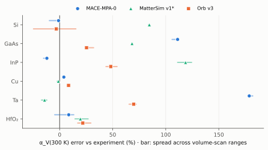
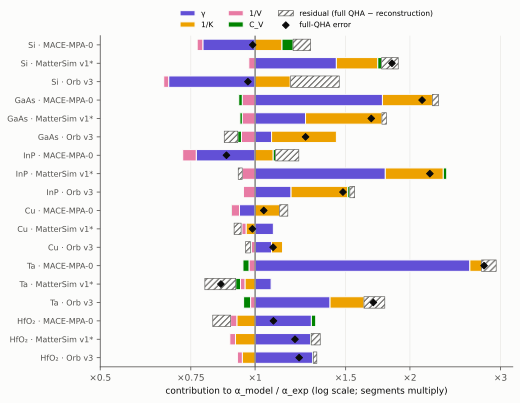
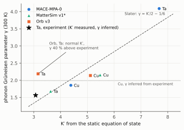
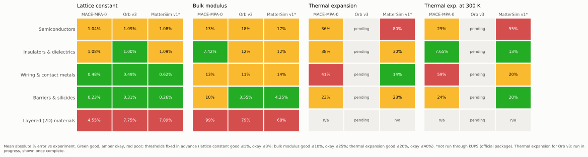
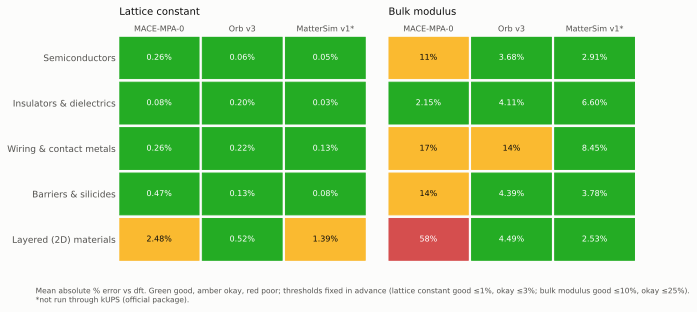
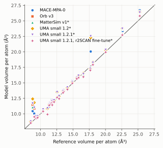
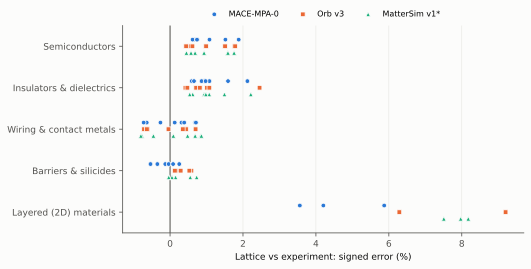
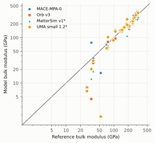
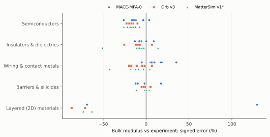
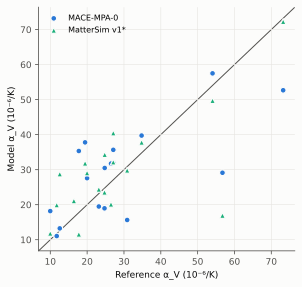
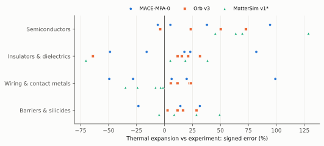
| Model | Material | V/atom | V/atom DFT | V/atom exp | err vs DFT % | err vs exp % | Status | Source |
|---|---|---|---|---|---|---|---|---|
| mace-mpa-0 | Si | 20.43 | 20.44 | 20.02 | -0.02 | 0.67 | compared | source |
| orb-v3 | Si | 20.35 | 20.44 | 20.02 | -0.15 | 0.55 | compared | source |
| mattersim-5m-native | Si | 20.44 | 20.44 | 20.02 | -0.01 | 0.69 | compared | source |
| mace-mpa-0 | Ge | 23.38 | 23.92 | 22.64 | -0.76 | 1.08 | compared | source |
| orb-v3 | Ge | 23.86 | 23.92 | 22.64 | -0.08 | 1.77 | compared | source |
| mattersim-5m-native | Ge | 23.85 | 23.92 | 22.64 | -0.10 | 1.76 | compared | source |
| mace-mpa-0 | SiC | 10.55 | 10.50 | 10.36 | 0.16 | 0.62 | compared | source |
| orb-v3 | SiC | 10.50 | 10.50 | 10.36 | -0.02 | 0.44 | compared | source |
| mattersim-5m-native | SiC | 10.50 | 10.50 | 10.36 | -0.01 | 0.45 | compared | source |
| mace-mpa-0 | GaAs | 23.63 | 23.77 | 22.58 | -0.19 | 1.52 | compared | source |
| orb-v3 | GaAs | 23.82 | 23.77 | 22.58 | 0.07 | 1.78 | compared | source |
| mattersim-5m-native | GaAs | 23.67 | 23.77 | 22.58 | -0.13 | 1.58 | compared | source |
| mace-mpa-0 | GaN | 11.68 | 11.74 | 11.42 | -0.17 | 0.74 | compared | source |
| orb-v3 | GaN | 11.76 | 11.74 | 11.42 | 0.07 | 0.99 | compared | source |
| mattersim-5m-native | GaN | 11.74 | 11.74 | 11.42 | 0.02 | 0.93 | compared | source |
| mace-mpa-0 | InP | 26.72 | 26.42 | 25.27 | 0.38 | 1.88 | compared | source |
| orb-v3 | InP | 26.43 | 26.42 | 25.27 | 0.01 | 1.51 | compared | source |
| mattersim-5m-native | InP | 26.49 | 26.42 | 25.27 | 0.09 | 1.59 | compared | source |
| mace-mpa-0 | AlN | 10.68 | 10.63 | 10.44 | 0.14 | 0.74 | compared | source |
| orb-v3 | AlN | 10.64 | 10.63 | 10.44 | 0.02 | 0.61 | compared | source |
| mattersim-5m-native | AlN | 10.63 | 10.63 | 10.44 | -0.02 | 0.57 | compared | source |
| mace-mpa-0 | SiO2_quartz | 13.37 | 13.42 | 12.56 | -0.13 | 2.12 | compared | source |
| orb-v3 | SiO2_quartz | 13.50 | 13.42 | 12.56 | 0.20 | 2.45 | compared | source |
| mattersim-5m-native | SiO2_quartz | 13.41 | 13.42 | 12.56 | -0.04 | 2.22 | compared | source |
| mace-mpa-0 | Si3N4_beta | 10.58 | 10.62 | 10.40 | -0.11 | 0.59 | compared | source |
| orb-v3 | Si3N4_beta | 10.62 | 10.62 | 10.40 | 0.01 | 0.72 | compared | source |
| mattersim-5m-native | Si3N4_beta | 10.59 | 10.62 | 10.40 | -0.08 | 0.62 | compared | source |
| mace-mpa-0 | Al2O3 | 8.74 | 8.74 | 8.50 | -0.02 | 0.94 | compared | source |
| orb-v3 | Al2O3 | 8.76 | 8.74 | 8.50 | 0.05 | 1.01 | compared | source |
| mattersim-5m-native | Al2O3 | 8.74 | 8.74 | 8.50 | 0.01 | 0.97 | compared | source |
| mace-mpa-0 | HfO2 | 11.75 | 11.69 | 11.53 | 0.18 | 0.66 | compared | source |
| orb-v3 | HfO2 | 11.67 | 11.69 | 11.53 | -0.05 | 0.42 | compared | source |
| mattersim-5m-native | HfO2 | 11.71 | 11.69 | 11.53 | 0.07 | 0.54 | compared | source |
| mace-mpa-0 | ZrO2 | 12.31 | 12.26 | 11.74 | 0.14 | 1.59 | compared | source |
| orb-v3 | ZrO2 | 12.03 | 12.26 | 11.74 | -0.63 | 0.82 | compared | source |
| mattersim-5m-native | ZrO2 | 12.27 | 12.26 | 11.74 | 0.04 | 1.49 | compared | source |
| mace-mpa-0 | Y2O3 | 15.33 | 15.33 | 14.90 | -0.00 | 0.94 | compared | source |
| orb-v3 | Y2O3 | 15.12 | 15.33 | 14.90 | -0.46 | 0.47 | compared | source |
| mattersim-5m-native | Y2O3 | 15.33 | 15.33 | 14.90 | -0.01 | 0.93 | compared | source |
| mace-mpa-0 | TiO2_rutile | 10.68 | 10.72 | 10.41 | -0.11 | 0.86 | compared | source |
| orb-v3 | TiO2_rutile | 10.78 | 10.72 | 10.41 | excluded: relaxed to a different crystal form (space group 136 -> 102) | source | ||
| mattersim-5m-native | TiO2_rutile | 10.72 | 10.72 | 10.41 | 0.00 | 0.98 | compared | source |
| mace-mpa-0 | MgO | 9.64 | 9.64 | 9.33 | 0.00 | 1.08 | compared | source |
| orb-v3 | MgO | 9.64 | 9.64 | 9.33 | -0.00 | 1.08 | compared | source |
| mattersim-5m-native | MgO | 9.64 | 9.64 | 9.33 | -0.01 | 1.07 | compared | source |
| mace-mpa-0 | SrTiO3 | 12.26 | 12.28 | 11.91 | -0.05 | 0.97 | compared | source |
| orb-v3 | SrTiO3 | 12.38 | 12.28 | 11.91 | excluded: relaxed to a different crystal form (space group 221 -> 160) | source | ||
| mattersim-5m-native | SrTiO3 | 12.27 | 12.28 | 11.91 | -0.04 | 0.98 | compared | source |
| mace-mpa-0 | Cu | 12.06 | 11.87 | 11.81 | 0.51 | 0.69 | compared | source |
| orb-v3 | Cu | 11.80 | 11.87 | 11.81 | -0.22 | -0.04 | compared | source |
| mattersim-5m-native | Cu | 11.84 | 11.87 | 11.81 | -0.08 | 0.09 | compared | source |
| mace-mpa-0 | Al | 16.47 | 16.47 | 16.60 | -0.01 | -0.26 | compared | source |
| orb-v3 | Al | 16.29 | 16.47 | 16.60 | -0.36 | -0.62 | compared | source |
| mattersim-5m-native | Al | 16.37 | 16.47 | 16.60 | -0.20 | -0.46 | compared | source |
| mace-mpa-0 | W | 16.00 | 16.19 | 15.85 | -0.40 | 0.31 | compared | source |
| orb-v3 | W | 16.18 | 16.19 | 15.85 | -0.01 | 0.70 | compared | source |
| mattersim-5m-native | W | 16.25 | 16.19 | 15.85 | 0.13 | 0.84 | compared | source |
| mace-mpa-0 | Co | 10.87 | 10.92 | 11.08 | -0.17 | -0.64 | compared | source |
| orb-v3 | Co | 10.84 | 10.92 | 11.08 | -0.25 | -0.71 | compared | source |
| mattersim-5m-native | Co | 10.82 | 10.92 | 11.08 | -0.30 | -0.77 | compared | source |
| mace-mpa-0 | Ru | 13.86 | 13.95 | 13.57 | -0.21 | 0.71 | compared | source |
| orb-v3 | Ru | 13.75 | 13.95 | 13.57 | -0.49 | 0.42 | compared | source |
| mattersim-5m-native | Ru | 13.93 | 13.95 | 13.57 | -0.06 | 0.86 | compared | source |
| mace-mpa-0 | Mo | 15.65 | 15.89 | 15.59 | -0.52 | 0.13 | compared | source |
| orb-v3 | Mo | 15.79 | 15.89 | 15.59 | -0.21 | 0.44 | compared | source |
| mattersim-5m-native | Mo | 15.91 | 15.89 | 15.59 | 0.04 | 0.69 | compared | source |
| mace-mpa-0 | Ti | 17.28 | 17.36 | 17.66 | -0.15 | -0.72 | compared | source |
| orb-v3 | Ti | 17.32 | 17.36 | 17.66 | -0.06 | -0.63 | compared | source |
| mattersim-5m-native | Ti | 17.24 | 17.36 | 17.66 | -0.23 | -0.80 | compared | source |
| mace-mpa-0 | Ta | 18.27 | 18.34 | 18.06 | -0.11 | 0.39 | compared | source |
| orb-v3 | Ta | 18.25 | 18.34 | 18.06 | -0.15 | 0.35 | compared | source |
| mattersim-5m-native | Ta | 18.33 | 18.34 | 18.06 | -0.02 | 0.48 | compared | source |
| mace-mpa-0 | TiN | 9.53 | 9.62 | 9.56 | -0.32 | -0.13 | compared | source |
| orb-v3 | TiN | 9.62 | 9.62 | 9.56 | 0.01 | 0.20 | compared | source |
| mattersim-5m-native | TiN | 9.61 | 9.62 | 9.56 | -0.04 | 0.15 | compared | source |
| mace-mpa-0 | TaN | 11.16 | 11.57 | 11.34 | -1.18 | -0.54 | compared | source |
| orb-v3 | TaN | 11.54 | 11.57 | 11.34 | -0.06 | 0.59 | compared | source |
| mattersim-5m-native | TaN | 11.59 | 11.57 | 11.34 | 0.08 | 0.73 | compared | source |
| mace-mpa-0 | CoSi2 | 12.97 | 12.83 | 12.87 | 0.34 | 0.25 | compared | source |
| orb-v3 | CoSi2 | 12.92 | 12.83 | 12.87 | 0.21 | 0.12 | compared | source |
| mattersim-5m-native | CoSi2 | 12.85 | 12.83 | 12.87 | 0.05 | -0.04 | compared | source |
| mace-mpa-0 | NiSi | 12.08 | 12.05 | 12.09 | 0.09 | -0.04 | compared | source |
| orb-v3 | NiSi | 12.20 | 12.05 | 12.09 | 0.42 | 0.29 | compared | source |
| mattersim-5m-native | NiSi | 12.11 | 12.05 | 12.09 | 0.18 | 0.05 | compared | source |
| mace-mpa-0 | TiSi2 | 14.00 | 14.18 | 14.14 | -0.43 | -0.35 | compared | source |
| orb-v3 | TiSi2 | 14.20 | 14.18 | 14.14 | 0.05 | 0.13 | compared | source |
| mattersim-5m-native | TiSi2 | 14.13 | 14.18 | 14.14 | -0.12 | -0.03 | compared | source |
| mace-mpa-0 | WSi2 | 13.51 | 13.71 | 13.48 | -0.48 | 0.08 | compared | source |
| orb-v3 | WSi2 | 13.69 | 13.71 | 13.48 | -0.04 | 0.53 | compared | source |
| mattersim-5m-native | WSi2 | 13.70 | 13.71 | 13.48 | -0.02 | 0.55 | compared | source |
| mace-mpa-0 | MoS2 | 20.06 | 21.86 | 17.73 | -2.83 | 4.20 | compared | source |
| orb-v3 | MoS2 | 23.27 | 21.86 | 17.73 | excluded: relaxed to a different crystal form (space group 194 -> 12) | source | ||
| mattersim-5m-native | MoS2 | 22.44 | 21.86 | 17.73 | 0.88 | 8.18 | compared | source |
| mace-mpa-0 | hBN | 10.04 | 10.53 | 9.04 | -1.58 | 3.56 | compared | source |
| orb-v3 | hBN | 10.86 | 10.53 | 9.04 | 1.02 | 6.29 | compared | source |
| mattersim-5m-native | hBN | 11.24 | 10.53 | 9.04 | 2.18 | 7.51 | compared | source |
| mace-mpa-0 | graphite | 10.44 | 11.45 | 8.80 | -3.03 | 5.87 | compared | source |
| orb-v3 | graphite | 11.46 | 11.45 | 8.80 | 0.02 | 9.20 | compared | source |
| mattersim-5m-native | graphite | 11.07 | 11.45 | 8.80 | -1.11 | 7.97 | compared | source |
| Model | Material | K_VRH | K_Reuss | B (EOS) | K_VRH DFT | B exp | err vs DFT % | err vs exp % | Status | Source |
|---|---|---|---|---|---|---|---|---|---|---|
| mace-mpa-0 | Si | 86.26 | 86.26 | 86.57 | 88.92 | 98.00 | -2.99 | -11.98 | compared | source |
| orb-v3 | Si | 82.93 | 82.93 | 83.69 | 88.92 | 98.00 | -6.73 | -15.37 | compared | source |
| mattersim-5m-native | Si | 85.96 | 85.96 | 85.87 | 88.92 | 98.00 | -3.32 | -12.28 | compared | source |
| mace-mpa-0 | Ge | 74.01 | 74.01 | 73.34 | 57.92 | 71.30 | 27.79 | 3.80 | compared | source |
| orb-v3 | Ge | 55.05 | 55.05 | 54.99 | 57.92 | 71.30 | -4.96 | -22.80 | compared | source |
| mattersim-5m-native | Ge | 58.83 | 58.83 | 58.94 | 57.92 | 71.30 | 1.58 | -17.49 | compared | source |
| mace-mpa-0 | SiC | 217.14 | 217.14 | 217.46 | 212.68 | 250.00 | 2.10 | -13.14 | compared | source |
| orb-v3 | SiC | 200.85 | 200.85 | 201.10 | 212.68 | 250.00 | -5.56 | -19.66 | compared | source |
| mattersim-5m-native | SiC | 212.49 | 212.49 | 212.23 | 212.68 | 250.00 | -0.09 | -15.00 | compared | source |
| mace-mpa-0 | GaAs | 64.64 | 64.64 | 64.12 | 60.74 | 75.30 | 6.42 | -14.16 | compared | source |
| orb-v3 | GaAs | 58.12 | 58.12 | 58.19 | 60.74 | 75.30 | -4.32 | -22.82 | compared | source |
| mattersim-5m-native | GaAs | 55.83 | 55.83 | 56.03 | 60.74 | 75.30 | -8.08 | -25.85 | compared | source |
| mace-mpa-0 | GaN | 155.15 | 155.13 | 156.13 | 172.14 | 210.00 | -9.87 | -26.12 | compared | source |
| orb-v3 | GaN | 170.87 | 170.87 | 170.45 | 172.14 | 210.00 | -0.74 | -18.63 | compared | source |
| mattersim-5m-native | GaN | 170.93 | 170.92 | 171.07 | 172.14 | 210.00 | -0.71 | -18.61 | compared | source |
| mace-mpa-0 | InP | 68.80 | 68.80 | 68.53 | 59.35 | 71.10 | 15.92 | -3.24 | compared | source |
| orb-v3 | InP | 59.01 | 59.01 | 58.69 | 59.35 | 71.10 | -0.58 | -17.01 | compared | source |
| mattersim-5m-native | InP | 55.66 | 55.66 | 55.73 | 59.35 | 71.10 | -6.22 | -21.71 | compared | source |
| mace-mpa-0 | AlN | 175.73 | 172.40 | 180.33 | 194.62 | 210.00 | -9.71 | -16.32 | compared | source |
| orb-v3 | AlN | 189.02 | 188.78 | 189.31 | 194.62 | 210.00 | -2.88 | -9.99 | compared | source |
| mattersim-5m-native | AlN | 193.90 | 193.80 | 193.91 | 194.62 | 210.00 | -0.37 | -7.67 | compared | source |
| mace-mpa-0 | SiO2_quartz | 35.22 | 35.07 | 33.91 | 33.57 | 37.12 | 4.93 | -5.53 | compared | source |
| orb-v3 | SiO2_quartz | 27.73 | 27.70 | 31.04 | 33.57 | 37.12 | -17.39 | -25.38 | compared | source |
| mattersim-5m-native | SiO2_quartz | 18.23 | 18.23 | 24.85 | 33.57 | 37.12 | -45.68 | -50.89 | compared | source |
| mace-mpa-0 | Si3N4_beta | 238.92 | 238.81 | 237.51 | 234.57 | 259.00 | 1.85 | -7.75 | compared | source |
| orb-v3 | Si3N4_beta | 228.51 | 228.31 | 228.79 | 234.57 | 259.00 | -2.58 | -11.77 | compared | source |
| mattersim-5m-native | Si3N4_beta | 230.97 | 230.76 | 231.10 | 234.57 | 259.00 | -1.53 | -10.82 | compared | source |
| mace-mpa-0 | Al2O3 | 232.03 | 231.74 | 232.85 | 231.00 | 252.10 | 0.44 | -7.96 | compared | source |
| orb-v3 | Al2O3 | 229.55 | 229.43 | 229.31 | 231.00 | 252.10 | -0.63 | -8.94 | compared | source |
| mattersim-5m-native | Al2O3 | 230.73 | 230.50 | 230.79 | 231.00 | 252.10 | -0.12 | -8.48 | compared | source |
| mace-mpa-0 | HfO2 | 204.41 | 201.64 | 201.16 | 204.90 | 185.00 | -0.24 | 9.00 | compared | source |
| orb-v3 | HfO2 | 202.55 | 197.81 | 202.61 | 204.90 | 185.00 | -1.15 | 6.92 | compared | source |
| mattersim-5m-native | HfO2 | 211.59 | 210.73 | 209.95 | 204.90 | 185.00 | 3.26 | 13.91 | compared | source |
| mace-mpa-0 | ZrO2 | 185.81 | 182.78 | 180.42 | 183.11 | 210.00 | 1.47 | -12.96 | compared | source |
| orb-v3 | ZrO2 | 189.45 | 185.11 | 187.29 | 183.11 | 210.00 | 3.46 | -11.85 | compared | source |
| mattersim-5m-native | ZrO2 | 195.56 | 195.04 | 192.89 | 183.11 | 210.00 | 6.80 | -7.12 | compared | source |
| mace-mpa-0 | Y2O3 | 136.65 | 136.65 | 136.64 | 138.41 | 149.50 | -1.27 | -8.59 | compared | source |
| orb-v3 | Y2O3 | 135.72 | 135.72 | 135.65 | 138.41 | 149.50 | -1.95 | -9.22 | compared | source |
| mattersim-5m-native | Y2O3 | 138.25 | 138.25 | 137.93 | 138.41 | 149.50 | -0.11 | -7.52 | compared | source |
| mace-mpa-0 | TiO2_rutile | 198.30 | 194.33 | 202.43 | 208.54 | 213.40 | -4.91 | -7.08 | compared | source |
| orb-v3 | TiO2_rutile | 169.25 | 168.52 | 171.37 | 208.54 | 213.40 | excluded: relaxed to a different crystal form | source | ||
| mattersim-5m-native | TiO2_rutile | 208.21 | 202.36 | 213.92 | 208.54 | 213.40 | -0.16 | -2.43 | compared | source |
| mace-mpa-0 | MgO | 147.81 | 147.81 | 148.12 | 151.45 | 160.20 | -2.40 | -7.74 | compared | source |
| orb-v3 | MgO | 149.05 | 149.05 | 148.78 | 151.45 | 160.20 | -1.58 | -6.96 | compared | source |
| mattersim-5m-native | MgO | 152.42 | 152.42 | 152.19 | 151.45 | 160.20 | 0.64 | -4.85 | compared | source |
| mace-mpa-0 | SrTiO3 | 174.02 | 174.02 | 173.58 | 170.93 | 173.70 | 1.81 | 0.19 | compared | source |
| orb-v3 | SrTiO3 | 124.82 | 123.73 | 125.15 | 170.93 | 173.70 | excluded: relaxed to a different crystal form | source | ||
| mattersim-5m-native | SrTiO3 | 169.11 | 169.11 | 168.78 | 170.93 | 173.70 | -1.06 | -2.64 | compared | source |
| mace-mpa-0 | Cu | 130.63 | 130.63 | 130.25 | 151.39 | 137.60 | -13.71 | -5.06 | compared | source |
| orb-v3 | Cu | 135.44 | 135.44 | 135.44 | 151.39 | 137.60 | -10.54 | -1.57 | compared | source |
| mattersim-5m-native | Cu | 143.48 | 143.48 | 143.91 | 151.39 | 137.60 | -5.23 | 4.27 | compared | source |
| mace-mpa-0 | Al | 81.50 | 81.50 | 81.84 | 75.50 | 7.95 | compared | source | ||
| orb-v3 | Al | 80.62 | 80.61 | 76.52 | 75.50 | 6.78 | compared | source | ||
| mattersim-5m-native | Al | 68.97 | 68.97 | 69.80 | 75.50 | -8.65 | compared | source | ||
| mace-mpa-0 | W | 367.54 | 367.54 | 368.42 | 302.26 | 310.80 | 21.60 | 18.26 | compared | source |
| orb-v3 | W | 249.08 | 249.08 | 250.71 | 302.26 | 310.80 | -17.60 | -19.86 | compared | source |
| mattersim-5m-native | W | 255.57 | 255.57 | 263.65 | 302.26 | 310.80 | -15.45 | -17.77 | compared | source |
| mace-mpa-0 | Co | 199.92 | 199.79 | 200.36 | 190.00 | 5.22 | compared | source | ||
| orb-v3 | Co | 181.61 | 181.60 | 181.16 | 190.00 | -4.42 | compared | source | ||
| mattersim-5m-native | Co | 109.46 | 109.45 | 122.14 | 190.00 | -42.39 | compared | source | ||
| mace-mpa-0 | Ru | 354.45 | 354.38 | 353.90 | 310.06 | 323.00 | 14.32 | 9.72 | compared | source |
| orb-v3 | Ru | 268.46 | 268.00 | 271.78 | 310.06 | 323.00 | -13.42 | -17.03 | compared | source |
| mattersim-5m-native | Ru | 284.69 | 284.20 | 290.28 | 310.06 | 323.00 | -8.18 | -12.01 | compared | source |
| mace-mpa-0 | Mo | 307.29 | 307.29 | 308.40 | 262.53 | 261.90 | 17.05 | 17.33 | compared | source |
| orb-v3 | Mo | 216.75 | 216.75 | 217.52 | 262.53 | 261.90 | -17.44 | -17.24 | compared | source |
| mattersim-5m-native | Mo | 238.79 | 238.79 | 245.08 | 262.53 | 261.90 | -9.04 | -8.82 | compared | source |
| mace-mpa-0 | Ti | 145.75 | 145.64 | 144.57 | 112.94 | 107.70 | 29.05 | 35.33 | compared | source |
| orb-v3 | Ti | 95.52 | 95.49 | 95.68 | 112.94 | 107.70 | -15.43 | -11.31 | compared | source |
| mattersim-5m-native | Ti | 94.62 | 94.61 | 96.92 | 112.94 | 107.70 | excluded: elastic tensor not positive definite | source | ||
| mace-mpa-0 | Ta | 203.77 | 203.77 | 202.82 | 194.53 | 191.90 | 4.75 | 6.19 | compared | source |
| orb-v3 | Ta | 171.06 | 171.06 | 171.55 | 194.53 | 191.90 | -12.07 | -10.86 | compared | source |
| mattersim-5m-native | Ta | 186.08 | 186.08 | 187.87 | 194.53 | 191.90 | -4.34 | -3.03 | compared | source |
| mace-mpa-0 | TiN | 241.33 | 241.33 | 244.69 | 278.51 | 274.00 | -13.35 | -11.92 | compared | source |
| orb-v3 | TiN | 259.80 | 259.80 | 259.57 | 278.51 | 274.00 | -6.72 | -5.18 | compared | source |
| mattersim-5m-native | TiN | 283.97 | 283.97 | 282.97 | 278.51 | 274.00 | 1.96 | 3.64 | compared | source |
| mace-mpa-0 | TaN | 338.39 | 338.34 | 346.21 | 306.31 | 288.00 | 10.47 | 17.48 | compared | source |
| orb-v3 | TaN | 303.00 | 302.98 | 302.23 | 306.31 | 288.00 | -1.08 | 5.20 | compared | source |
| mattersim-5m-native | TaN | 290.29 | 289.46 | 291.43 | 306.31 | 288.00 | -5.23 | 0.51 | compared | source |
| mace-mpa-0 | CoSi2 | 193.33 | 193.33 | 190.54 | 173.64 | 11.34 | no experimental reference | |||
| orb-v3 | CoSi2 | 163.59 | 163.59 | 164.07 | 173.64 | -5.79 | no experimental reference | |||
| mattersim-5m-native | CoSi2 | 178.62 | 178.62 | 177.03 | 173.64 | 2.87 | no experimental reference | |||
| mace-mpa-0 | NiSi | 166.30 | 162.18 | 170.40 | 164.82 | 165.00 | 0.90 | -1.71 | compared | source |
| orb-v3 | NiSi | 160.98 | 160.25 | 161.55 | 164.82 | 165.00 | -2.33 | -2.88 | compared | source |
| mattersim-5m-native | NiSi | 163.02 | 162.45 | 163.82 | 164.82 | 165.00 | -1.09 | -1.55 | compared | source |
| mace-mpa-0 | TiSi2 | 134.45 | 131.12 | 139.36 | 142.13 | 148.90 | -5.40 | -9.70 | compared | source |
| orb-v3 | TiSi2 | 147.52 | 144.55 | 150.00 | 142.13 | 148.90 | 3.79 | -0.93 | compared | source |
| mattersim-5m-native | TiSi2 | 132.08 | 129.65 | 134.72 | 142.13 | 148.90 | -7.08 | -11.30 | compared | source |
| mace-mpa-0 | WSi2 | 312.45 | 311.86 | 309.10 | 219.44 | 42.38 | no experimental reference | |||
| orb-v3 | WSi2 | 204.90 | 204.40 | 205.09 | 219.44 | -6.63 | no experimental reference | |||
| mattersim-5m-native | WSi2 | 209.73 | 208.97 | 210.65 | 219.44 | -4.43 | no experimental reference | |||
| mace-mpa-0 | MoS2 | 43.17 | 16.67 | 69.42 | 25.57 | 53.40 | 68.80 | -68.78 | compared | source |
| orb-v3 | MoS2 | 23.09 | 1.64 | 44.62 | 25.57 | 53.40 | excluded: relaxed to a different crystal form | source | ||
| mattersim-5m-native | MoS2 | 23.61 | 0.35 | 47.00 | 25.57 | 53.40 | excluded: elastic tensor not positive definite | source | ||
| mace-mpa-0 | hBN | 84.53 | -33.49 | 205.30 | 102.46 | 27.40 | excluded: elastic tensor not positive definite | source | ||
| orb-v3 | hBN | 101.89 | 7.95 | 195.60 | 102.46 | 27.40 | -0.55 | -70.99 | compared | source |
| mattersim-5m-native | hBN | 98.99 | 7.37 | 190.50 | 102.46 | 27.40 | -3.38 | -73.09 | compared | source |
| mace-mpa-0 | graphite | 170.31 | 77.54 | 260.20 | 115.98 | 33.80 | 46.85 | 129.40 | compared | source |
| orb-v3 | graphite | 106.20 | 4.47 | 207.87 | 115.98 | 33.80 | -8.43 | -86.76 | compared | source |
| mattersim-5m-native | graphite | 117.92 | 12.47 | 223.10 | 115.98 | 33.80 | 1.68 | -63.11 | compared | source |
| Model | Material | T low | T high | α_V window | α_V exp window | err window % | α_V 300 K | α_V exp 300 K | err 300 K % | Status | Status at 300 K | Source |
|---|---|---|---|---|---|---|---|---|---|---|---|---|
| mace-mpa-0 | Si | 500 | 800 | 11.04 | 11.74 | -5.97 | 7.76 | 7.85 | -1.17 | compared | compared | source |
| mattersim-5m-native | Si | 500 | 800 | 19.91 | 11.74 | 69.57 | 14.50 | 7.85 | 84.65 | compared | compared | source |
| mace-mpa-0 | Ge | 300 | 600 | 27.57 | 19.98 | 37.95 | 25.25 | 18.42 | 37.07 | compared | compared | source |
| mattersim-5m-native | Ge | 300 | 600 | 29.06 | 19.98 | 45.41 | 27.05 | 18.42 | 46.84 | compared | compared | source |
| mace-mpa-0 | SiC | 900 | 1550 | 18.08 | 8.20 | 9.87 | -16.90 | no experimental reference | compared | source | ||
| mattersim-5m-native | SiC | 900 | 1550 | 17.11 | 7.84 | 9.87 | -20.53 | no experimental reference | compared | source | ||
| mace-mpa-0 | GaAs | 300 | 750 | 37.79 | 19.44 | 94.37 | 36.31 | 17.19 | 111.23 | compared | compared | source |
| mattersim-5m-native | GaAs | 300 | 750 | 31.82 | 19.44 | 63.68 | 28.92 | 17.19 | 68.21 | compared | compared | source |
| mace-mpa-0 | GaN | 450 | 1350 | 18.97 | 11.64 | 12.52 | -7.04 | no experimental reference | compared | source | ||
| mattersim-5m-native | GaN | 450 | 1350 | 21.46 | 13.90 | 12.52 | 11.05 | no experimental reference | compared | source | ||
| mace-mpa-0 | InP | 350 | 650 | 13.23 | 12.57 | 5.28 | 11.05 | compared | no experimental reference | source | ||
| mattersim-5m-native | InP | 350 | 650 | 28.75 | 12.57 | 128.71 | 27.49 | compared | no experimental reference | source | ||
| mace-mpa-0 | AlN | 900 | 1600 | 18.10 | 10.30 | 8.29 | 24.19 | no experimental reference | compared | source | ||
| mattersim-5m-native | AlN | 900 | 1600 | 20.61 | 10.68 | 8.29 | 28.77 | no experimental reference | compared | source | ||
| mace-mpa-0 | SiO2_quartz | 400 | 750 | 29.11 | 56.74 | -48.69 | 40.06 | 37.53 | 6.74 | compared | compared | source |
| mattersim-5m-native | SiO2_quartz | 400 | 750 | 16.92 | 56.74 | -70.18 | 29.29 | 37.53 | -21.95 | compared | compared | source |
| mace-mpa-0 | Si3N4_beta | 750 | 1050 | 18.17 | 9.98 | 82.06 | 7.88 | compared | no experimental reference | source | ||
| mattersim-5m-native | Si3N4_beta | 750 | 1050 | 11.81 | 9.98 | 18.29 | 4.51 | compared | no experimental reference | source | ||
| mace-mpa-0 | Al2O3 | 800 | 1150 | 31.92 | 27.09 | 17.80 | 20.26 | 20.45 | -0.93 | compared | compared | source |
| mattersim-5m-native | Al2O3 | 800 | 1150 | 32.15 | 27.09 | 18.68 | 20.03 | 20.45 | -2.04 | compared | compared | source |
| mace-mpa-0 | HfO2 | 400 | 1500 | 19.48 | 23.17 | -15.94 | 18.37 | compared | no experimental reference | source | ||
| mattersim-5m-native | HfO2 | 400 | 1500 | 24.38 | 23.17 | 5.22 | 20.24 | compared | no experimental reference | source | ||
| mace-mpa-0 | ZrO2 | 450 | 1400 | 19.88 | 19.33 | no experimental reference | no experimental reference | source | ||||
| mattersim-5m-native | ZrO2 | 450 | 1400 | 23.95 | 21.22 | no experimental reference | no experimental reference | source | ||||
| mace-mpa-0 | Y2O3 | 400 | 1300 | 30.48 | 24.77 | 23.04 | 23.19 | 21.92 | 5.81 | compared | compared | source |
| mattersim-5m-native | Y2O3 | 400 | 1300 | 34.29 | 24.77 | 38.45 | 24.70 | 21.92 | 12.67 | compared | compared | source |
| mace-mpa-0 | TiO2_rutile | 600 | 1050 | 28.02 | 22.69 | excluded: dynamically unstable (lowest phonon -6.82 THz) | excluded: dynamically unstable (lowest phonon -6.82 THz) | source | ||||
| mattersim-5m-native | TiO2_rutile | 600 | 1050 | 28.02 | 22.69 | excluded: dynamically unstable (lowest phonon -6.72 THz) | excluded: dynamically unstable (lowest phonon -6.72 THz) | source | ||||
| mace-mpa-0 | MgO | 750 | 1500 | 61.46 | 45.85 | 37.96 | 31.76 | 19.54 | excluded: failed: volume_inside_scan | compared | source | |
| mattersim-5m-native | MgO | 750 | 1500 | 65.17 | 45.85 | 37.62 | 31.76 | 18.47 | excluded: failed: volume_inside_scan | compared | source | |
| mace-mpa-0 | SrTiO3 | 400 | 1150 | 34.14 | 30.92 | excluded: dynamically unstable (lowest phonon -7.69 THz) | excluded: dynamically unstable (lowest phonon -7.69 THz) | source | ||||
| mattersim-5m-native | SrTiO3 | 400 | 1150 | 34.14 | 30.92 | excluded: dynamically unstable (lowest phonon -7.55 THz) | excluded: dynamically unstable (lowest phonon -7.55 THz) | source | ||||
| mace-mpa-0 | Cu | 300 | 650 | 57.49 | 54.05 | 6.38 | 51.65 | 49.68 | 3.96 | compared | compared | source |
| mattersim-5m-native | Cu | 300 | 650 | 49.71 | 54.05 | -8.02 | 49.09 | 49.68 | -1.20 | compared | compared | source |
| mace-mpa-0 | Al | 300 | 450 | 52.67 | 73.22 | -28.07 | 50.83 | 69.63 | -27.00 | compared | compared | source |
| mattersim-5m-native | Al | 300 | 450 | 72.26 | 73.22 | -1.32 | 74.84 | 69.63 | 7.47 | compared | compared | source |
| mace-mpa-0 | W | 300 | 1800 | 24.53 | 20.05 | 13.51 | 48.42 | no experimental reference | compared | source | ||
| mattersim-5m-native | W | 300 | 1800 | 9.55 | 12.10 | 13.51 | -10.43 | no experimental reference | compared | source | ||
| mace-mpa-0 | Co | 300 | 600 | 50.43 | 51.22 | 39.20 | 30.66 | no experimental reference | compared | source | ||
| mattersim-5m-native | Co | 300 | 600 | 14.69 | 18.85 | 39.20 | -51.91 | no experimental reference | compared | source | ||
| mace-mpa-0 | Ru | 350 | 1300 | 31.73 | 26.48 | 19.86 | 31.02 | 20.41 | 51.99 | compared | compared | source |
| mattersim-5m-native | Ru | 350 | 1300 | 20.11 | 26.48 | -24.06 | 21.66 | 20.41 | 6.12 | compared | compared | source |
| mace-mpa-0 | Mo | 300 | 1400 | 35.32 | 17.74 | 99.07 | 28.41 | 14.43 | 96.87 | compared | compared | source |
| mattersim-5m-native | Mo | 300 | 1400 | 11.55 | 17.74 | -34.89 | 13.26 | 14.43 | -8.13 | compared | compared | source |
| mace-mpa-0 | Ti | 300 | 950 | 15.63 | 30.87 | -49.38 | 17.82 | 25.93 | -31.30 | compared | compared | source |
| mattersim-5m-native | Ti | 300 | 950 | 29.81 | 30.87 | -3.43 | 40.29 | 25.93 | 55.38 | compared | compared | source |
| mace-mpa-0 | Ta | 300 | 1600 | 46.70 | 52.82 | 18.95 | 178.72 | no experimental reference | compared | source | ||
| mattersim-5m-native | Ta | 300 | 1600 | 13.84 | 16.26 | 18.95 | -14.19 | no experimental reference | compared | source | ||
| mace-mpa-0 | TiN | 700 | 1600 | 74.76 | 33.95 | 24.38 | 39.28 | excluded: failed: volume_inside_scan | compared | source | ||
| mattersim-5m-native | TiN | 700 | 1600 | 53.16 | 27.82 | 24.38 | 14.13 | no experimental reference | compared | source | ||
| mace-mpa-0 | TaN | 400 | 900 | 16.40 | excluded: dynamically unstable (lowest phonon -2.00 THz) | excluded: dynamically unstable (lowest phonon -2.00 THz) | source | |||||
| mattersim-5m-native | TaN | 400 | 900 | 21.09 | 16.40 | 28.58 | 16.58 | compared | no experimental reference | source | ||
| mace-mpa-0 | CoSi2 | 400 | 750 | 33.08 | 27.00 | 30.90 | -12.61 | no experimental reference | compared | source | ||
| mattersim-5m-native | CoSi2 | 400 | 750 | 46.93 | 38.17 | 30.90 | 23.54 | no experimental reference | compared | source | ||
| mace-mpa-0 | NiSi | 350 | 600 | 35.66 | 27.10 | 31.58 | 33.23 | compared | no experimental reference | source | ||
| mattersim-5m-native | NiSi | 350 | 600 | 40.46 | 27.10 | 49.30 | 37.54 | compared | no experimental reference | source | ||
| mace-mpa-0 | TiSi2 | 500 | 900 | 39.73 | 34.79 | 14.22 | 34.89 | 35.94 | -2.91 | compared | compared | source |
| mattersim-5m-native | TiSi2 | 500 | 900 | 37.79 | 34.79 | 8.64 | 33.93 | 35.94 | -5.58 | compared | compared | source |
| mace-mpa-0 | WSi2 | 500 | 1200 | 18.96 | 24.72 | -23.29 | 14.91 | 24.84 | -39.97 | compared | compared | source |
| mattersim-5m-native | WSi2 | 500 | 1200 | 23.54 | 24.72 | -4.77 | 20.32 | 24.84 | -18.19 | compared | compared | source |
| mace-mpa-0 | MoS2 | 400 | 900 | 26.19 | 22.05 | excluded: layered: isotropic volume scan cannot represent its anisotropic expansion | excluded: layered: isotropic volume scan cannot represent its anisotropic expansion | |||||
| mattersim-5m-native | MoS2 | 400 | 900 | 19.68 | 17.27 | excluded: layered: isotropic volume scan cannot represent its anisotropic expansion | excluded: layered: isotropic volume scan cannot represent its anisotropic expansion | |||||
| mace-mpa-0 | hBN | 300 | 1300 | 38.91 | 36.34 | excluded: layered: isotropic volume scan cannot represent its anisotropic expansion | excluded: layered: isotropic volume scan cannot represent its anisotropic expansion | source | ||||
| mattersim-5m-native | hBN | 300 | 1300 | -5.24 | 38.91 | -9.87 | 36.34 | excluded: layered: isotropic volume scan cannot represent its anisotropic expansion | excluded: layered: isotropic volume scan cannot represent its anisotropic expansion | source | ||
| mace-mpa-0 | graphite | 600 | 1200 | 2.96 | 28.52 | -3.82 | 21.99 | excluded: layered: isotropic volume scan cannot represent its anisotropic expansion | excluded: layered: isotropic volume scan cannot represent its anisotropic expansion | source | ||
| mattersim-5m-native | graphite | 600 | 1200 | -0.09 | 28.52 | -5.78 | 21.99 | excluded: layered: isotropic volume scan cannot represent its anisotropic expansion | excluded: layered: isotropic volume scan cannot represent its anisotropic expansion | source |
| Model | Material | T low | T high | α_V window | α_V exp window | err window % | α_V 300 K | α_V exp 300 K | err 300 K % | Status | Status at 300 K | Source |
|---|---|---|---|---|---|---|---|---|---|---|---|---|
| orb-v3 | Si | 500 | 800 | 11.88 | 11.74 | 8.25 | 7.85 | not computed in this release | not computed in this release | source | ||
| orb-v3 | Ge | 300 | 600 | 30.13 | 19.98 | 28.34 | 18.42 | not computed in this release | not computed in this release | source | ||
| orb-v3 | SiC | 900 | 1550 | 16.71 | 8.17 | 9.87 | not computed in this release | not computed in this release | source | |||
| orb-v3 | GaAs | 300 | 750 | 23.38 | 19.44 | 21.10 | 17.19 | not computed in this release | not computed in this release | source | ||
| orb-v3 | GaN | 450 | 1350 | 22.98 | 14.91 | 12.52 | not computed in this release | not computed in this release | source | |||
| orb-v3 | InP | 350 | 650 | 22.62 | 12.57 | 19.45 | not computed in this release | not computed in this release | source | |||
| orb-v3 | AlN | 900 | 1600 | 21.00 | 10.77 | 8.29 | not computed in this release | not computed in this release | source |